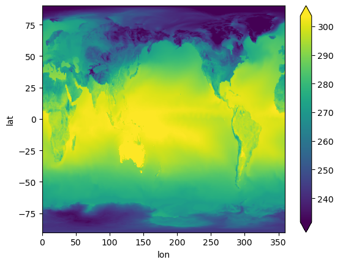
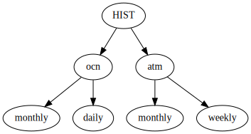

Posts tagged visualization
Analyzing and Visualizing CAM-SE Output in Python
- 15 August 2023
We demonstrate a variety of options for analyzing and visualizing output from the Community Atmosphere Model (CAM) with the spectral element (SE) grid in Python. This notebook was developed for the ESDS Collaborative Work Time on Unstructured Grids, which took place on April 17, 2023. A recap of the related CAM-SE discussion can be found here.
Regrid CAM-SE output using map file
Reading WRF data into Xarray and Visualizing the Output using hvPlot
- 15 October 2021
The typical data workflow within the Python ecosystem when working with Weather Research and Forecasting (WRF) data is to use the wrf-python package! Traditionally, it can be difficult to utilize the xarray data model with WRF data, due to a few challenges:
WRF data not being CF-compliant (which makes it hard for xarray to properly construct the dataset out of the box using xr.open_dataset)

CESM2-Large Ensemble Reproduction of a Figure from Kay et al. 2015 Using Intake-ESM and hvPlot
- 08 October 2021
This Jupyter Notebook demonstrates how one might use the NCAR Community Earth System Model v2 (CESM2) Large Ensemble (CESM2-LE) data hosted on AWS S3. The notebook shows how to reproduce figure 2 from the Kay et al. (2015) paper describing the CESM LENS dataset (doi:10.1175/BAMS-D-13-00255.1), with the LENS2 dataset.
There was a previous notebook which explored this use case, put together by Joe Hamman and Anderson Banihirwe, accessible on the Pangeo Gallery using this link. The specific figure we are replicating is shown below.

Reimagining Diagnostics Through the Use of the Jupyter Ecosystem
- 24 September 2021
Typically, diagnostics packages are written with following structure, using script-based workflows
Read files and do some preprocessing

Examining Diagnostics Using Intake-ESM and hvPlot
- 20 August 2021
In previous weeks, we have looked at building Intake-ESM catalogs from history files and visualizing CESM output using Holoviews and Datashader, but this week we are putting together a few of those pieces to visualize a comparison between model runs.
One of the first ESDS blog posts looked at building an interactive dashboard to look at plots, using high resolution ocean model output as the dataset. One of the limitations of that approach is that the images are static - we are pulling in pngs, and rending on the page, as opposed to more interactive options. In this example, we will read in data generated from ecgtools, from a directory only accessible via NCAR’s high performance computing center.
Plotting CESM Data on an Unstructured Grid using Geoviews and Datashader
- 13 August 2021
This week, during Xdev office hours, Steve Yeager raised a question regarding plotting unstructured grid data within Python. He was interested in plotting output from the Community Atmosphere Model, which supports unstructured grids, essentially a combination of triangles allowing for higher resolution in certain parts of the domain. This can be adventageous when wanting to achieve the benefits of high resolution within the primary domain, while maintaining the global scale of the model. This week, NCAR Science tweeted a great explanation of how revolutionary this capability is in the context of resolving processes over Greenland.
Unstructured grids can be difficult to plot directly within Python since they do not follow the typical lat, lon (x, y) convention. There is some preprocessing that needs to be applied before plotting.
Creating Visualizations of Intake-ESM Catalogs
- 11 June 2021
A common initial task when working with a new dataset is figuring out what data is available. This is especially true when working with climate ensembles with several components and time-frequency output (ex. Community Earth System Model Large Ensemble, CESM-LE). Here, we will examine different methods of investigating this catalog
Here, we will use intake-esm and graphviz, which can be installed using the following (including jupyterlab too!)
